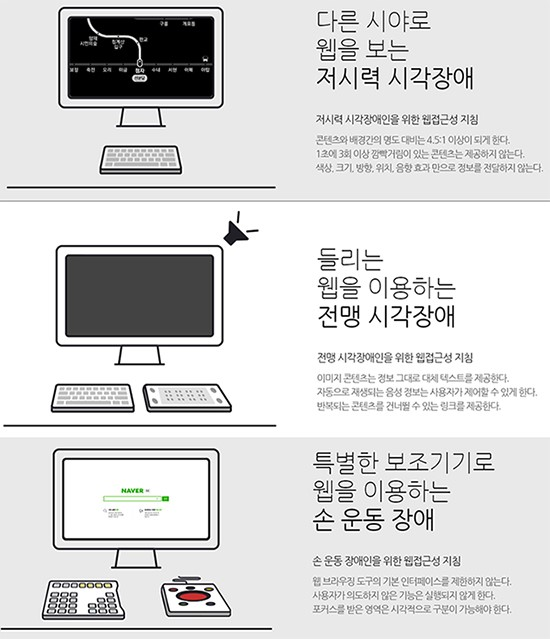

웹 표준
개요
월드 와이드 웹의 측면을 서술하고 정의하는 공식 표준이나 다른 기술 규격을 가리키는 일반적인 용어.

보통 인터넷을 이용할 때 같은 웹페이지라면 어느 브라우저를 사용하는지 여부에 상관없이 그 웹페이지가 똑같이 보이고 정상적으로 작동해야 함을 의미한다. Acid 테스트를 통해서 웹 브라우저가 웹 표준을 준수하는지 테스트할 수 있다.
- 웹 사이트를 작성하는 데 중요도가 높아지고 있으며 웹 디자인, 개발과 관계가 있다.
- 일반적인 브라우저에 공통적으로 제공되는 플러그인은 이 기준에서 예외가 되는 경우가 많다.
일반적인 이용
웹 사이트나 웹 페이지가 웹 표준을 준수한다는 것은 일반적으로 올바른 HTML, CSS, 자바스크립트를 사이트나 페이지가 가지고 있다는 것을 뜻한다. HTML은 접근성과 시맨틱 HTML의 가이드라인을 충족해야 한다.
웹 접근성
W3C의 정의에 의하면 웹 표준성은 접근성, 사생활 보호, 보안, 국제화의 측면을 고려해야 한다. 이 중에 접근성을 흔히 '웹접근성'이라고 하고 웹 표준성과 함께 많이 언급되는 개념이다.
웹접근성은 장애 여부에 상관없이 누구나 원활하게 웹페이지를 이용할 수 있어야 한다는 것을 의미한다.'메뉴'라고 텍스트로 집어 넣지 않고 메뉴라고 그려진 이미지를 사용하면 비 시각 장애인의 눈에는 똑같이 메뉴라고 보이지만 소프트웨어 입장에서는 그저 이미지일 뿐이다. 그 이미지 안에 그려진 내용을 인식하는 것은 불가능하다. 그래서 되도록이면 이미지를 사용하지 말고 소스 코드에 내용을 그대로 담는 것이 권장되며, 부득이하게 이미지를 사용할 경우 반드시 이 이미지가 어떤 내용인지 설명을 추가해야 한다.
장애인 복지법 제 22조(정보에의 접근)
① 국가와 지방자치단체는 장애인이 정보에 원활하게 접근하고 자신의 의사를 표시할 수 있도록 전기통신, 방송시설 등을 개선하기 위하려 노력하여야 한다.
장애인차별금지 및 권리구제등에 관한 법률 제20조(정보접근에서의 차별금지)
① 개인·법인·공공기관(이하 이 조에서 "개인 등"이라 한다)은 장애인이 전자정보와 비전자정보를 이용하고 그에 접근함에 있어서 장애를 이유로 제4조 제1항 제1호 및 제2호에서 금지한 차별행위를 하여서는 아니 된다.
국가정보화 기본법
제32조(장애인ㆍ고령자 등의 정보 접근 및 이용 보장)
① 국가기관등은 인터넷을 통하여 정보나 서비스를 제공할 때 장애인·고령자 등이 쉽게 웹사이트를 이용할 수 있도록 접근성을 보장하여야 한다.
출처
웹표준 - 위키백과
웹접근성 - 네이버 지식백과